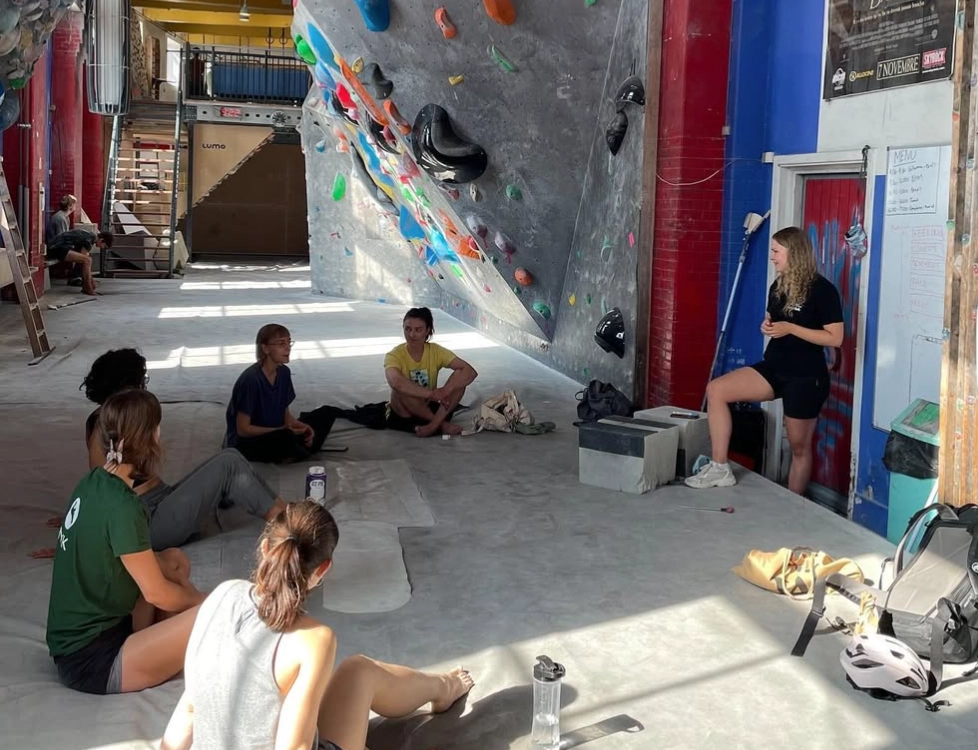

Vil du være med til at skabe den gode stemning, udvikle spændende klatreproblemer eller arrangere uforglemmelige events?
Som frivillig i NKK har du mulighed for at blive en aktiv del af vores klubfællesskab, lære nye mennesker at kende og bidrage til et endnu bedre klatremiljø. Uanset om du er nybegynder eller erfaren klatrer, er der plads til dig, og dine idéer er altid velkomne!
Læs mere om, hvordan du kan engagere dig herunder.
Man kan blive træner for junior- og børneholdet, eller være med som træner af begynderholdet. Det er en super god måde at komme i kontakt med mange af klubbens medlemmer.
Vær med til at sætte nye problemer i NKK. Som frivillig rute kan du udvikle din forståelse af klatrebevægelser og udfordre dig selv og dine venner. Uanset om du klatrer grønne eller hvide problemer, om du har klatrer i mange år eller er helt ny, kan du være med til at skabe de bedste faciliteter fro leg og træning. Det første skridt er at melde dig til er at melde dig til en rutebygworkshop der finder sted hver anden uge. Her bliver du introduceret til hvordan du kan bygge på en sikker måde. Herefter får du mulighed for at ekspermentere med at bygge dine første problemer. Næste skridt er at blive sikkerhedsansvarlig. Så kan du selv afholde workshops og du får mulighed for at bygge når det passer dig. Gå ind på kalenderen på denne side og se hvornår næste workshop bliver afholdt.
Der er altid plads til flere der vil være med til at gøre klubben bedre. Her kan du orientere i udvalgene. Hvis du vil være med i et udvalg, er du velkommen til at sende en mail til udvalg@nkk.dk. Du er også velkommen til at skrive til denne mail hvis du har en idé til et nyt udvalg.
| BaNanna: | Ansvarlige for driften af Bananna-væggen. |
| Fest: | Arrangerer fester for klubbens medlemmer. |
| Højvæg: | Højvægsudvalget udvikler og driver NKKs indendørs højvæg i Nørrebrohallen. |
| Kickstart: | Udvalget sørger for at nye medlemmer føler sig velkomne i NKK. De arrangerer fælles træninger, ture og sociale arrangementer for de nye medlemmer. |
| Klubdag: | Arrangerer arbejdsdage og sociale arrangementer. |
| Konkurrence: | Arrangerer de store konkurrencer i NKK og mindre events for NKKs medlemmer. |
| Rutebyg: | Laver retningslinjer for hvordan der bliver sat problemer og arrangerer workshops. |
| Crack: | Crack-udvalget undersøger mulighederne for at udvikle træningsredskaber til crack-klatring i NKK. |
| Nørre Fælled-udvalg: | Sætter rammerne for drift og brug af bouldervægen på Nørre Fælled Skole. |
| Nyt udvalg: | Hvis du har en speciel interesse eller mener du kan bidrage til NKK, skal du bestemt overveje at lave et nyt udvalg. Der er altid plads til flere og vi glæder os til at høre din idé. |